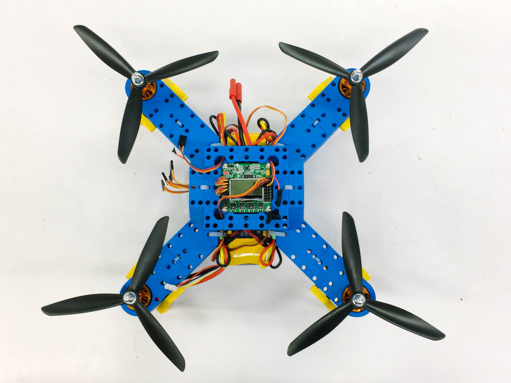
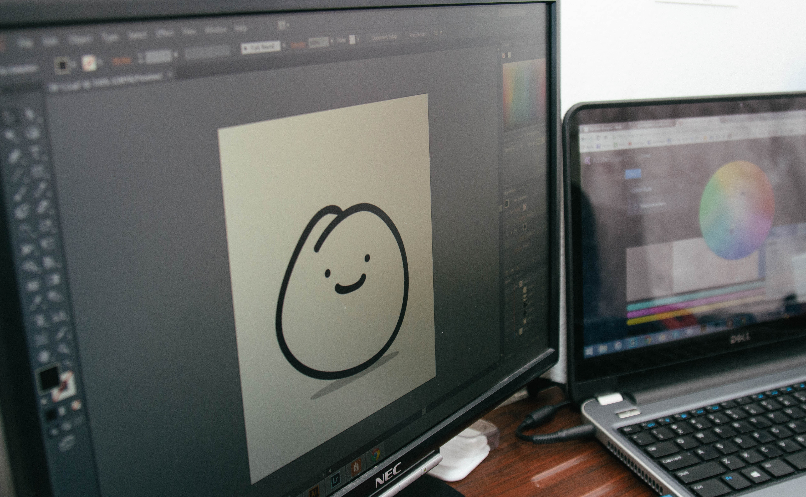

projects
stuff i made
Wiki-Gen
August 2015 - Present
Wiki-Gen is a Wikipedia Page Generator. A topic is searched on the webpage, and based on the search results, sentences are formed using Markov Chains and a database of parsed words from Wikipedia pages. Although the articles may not entirely make sense, the page should relate to typical Wikipedia pages with any generated page. See the Github page to follow our process.

Quad Academy
May 2015 - Present
Quad Academy is a subdivision of CMU's Robotics Quadrotor Club. The subdivision is a project itself, which aims to help spread educational quadrotor kits to high schools around the Pittsburgh area. These kits would help students learn basic programming, promote hobbyism, and introduce concepts of hardware and electrical work. This project is currently in the works so more updates will be available. In the meantime, however, you can view Quadrotor Club's flickr account to look at images of some of our earlier work. We are currently partnerning up with Project Ignite (@CMU) to become high school mentors on this subject
Snaps v Humanity
February 6 - 8, 2015
"Snaps v Humanity" combines the popular social application, Snapchat, and the popular card game, Cards Against Humanity. For CMU's TartanHacks 2015, our team built a platform for this mobile game to be easily played by anyone who had access to Snapchat. The game was hosted through a server over the course of TartanHacks, however, since the 24-hour hackathon is over, the server is also down. But if you want to view our work, visit our repository on Github [note: our commit messages aren't very professional since we worked in the same room during this project]. Also, you can download our project's PowerPoint and read the comments here.

Piairno
January 11, 2015 - January 17, 2015
The Piairno is a wearable set of gloves that produces musical tones when played. With the aid of flex sensors and Arduino Unos, the concept of an "Air Piano" came to life during Carnegie Mellon University's Build 18 Week 2015 (a week long hackathon for engineers at CMU). A link to the project's wiki page can be found here.

Ezzy World
November - December 2014
Ezzy World is a simple life-simulating game created with Python's TKinter and Adobe Illustrator. The project was created for Carnegie Mellon University's Fundamentals of Programming course (15-112). Project source code can be found here.
Philly Home Finder
September 4 - September 6, 2015
Philly Home Finder helps users find suitable neighborhoods that match their preferences in the city of Philadelphia. For Pennapps Fall 2015, our group created a web application that allows users to set certain parameters based on what they would like to see in their neighborhood (i.e. better education, parks, etc.). The application then takes those parameters and synthesizes them with data from a large collection of civil data for Philadelphia. The application would then map and color code suitable neighborhoods (based on zip-codes) for an easy user experience. We used Flask to develope the framework, as well as Microsoft Azure's DocumentDB for creating the database. Check out our source code here.